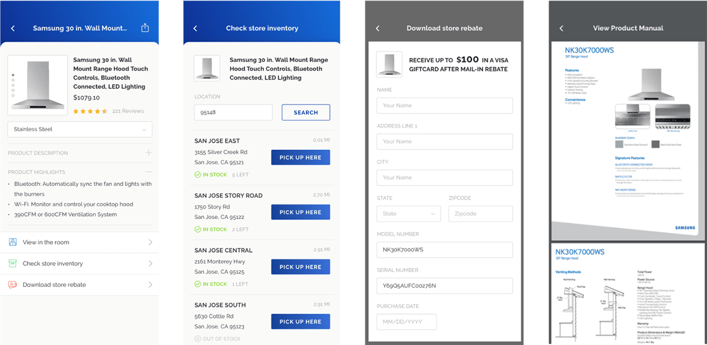
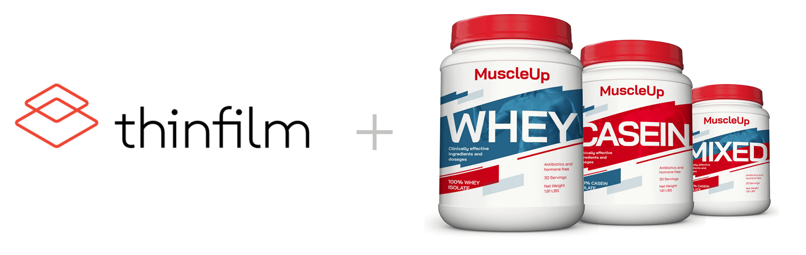

1st project
Thinfilm—‘tap to’ consumer experience
Thinfilm is a San Jose-based company, whose value proposition is to enhance the customer experience with non-electronic items by adding unique near field communication tags, or NFC tags, providing both the customer and the seller with valuable contextual actionable information. In spite of this, their initial presentation proposal used kitchen appliances, which seemed to downplay the presentation impact. We assumed users would already expect these appliances to have a level of connectivity.

Initial screens provided by Thinfilm
To give Thinfilm’s presentation the surprise effect we wanted, we brainstormed items that would replace these appliances by fulfilling some requirements:
- does not have any electronic parts and internet connectivity,
- consumers are emotionally related to,
- and are of everyday use.
After a series of ideas, we came up with a fictional protein powder brand called MuscleUp, around which we tailored the narrative.

We defined the user journey based on current and future-facing capabilities of Thinfilm’s NFC technology. The whole experience would happen on a mobile device, and the prototype would account for multiple use cases.
| Scenario |
Customer needs |
Proposed solution |
| In-store product search |
The customer is at the store considering buying the product and needs to receive accurate product information. |
Marketing content (videos, reviews, testimonials, etc.) |
| Purchase consideration |
The customer needs to know how this product compares to other product options. |
Product comparison table, populated by tapping products |
| Product regular usage |
The customer is probably at home and needs contextual information on how to use the product. |
Geolocation, account creation, marketing content (recipes, exercise tips, etc.) |
| Product is about to expire |
The user needs to be notified on time and have the option to reorder the product. |
Notifications, in-app ecommerce |
| Wrong shipment |
The user received the wrong item and needs to access customer support and personalized assistance. |
In-app live chat |
With a redefined storyline and use cases in place, I proceeded to create the prototype wireframes, which later evolved into the high fidelity screens.